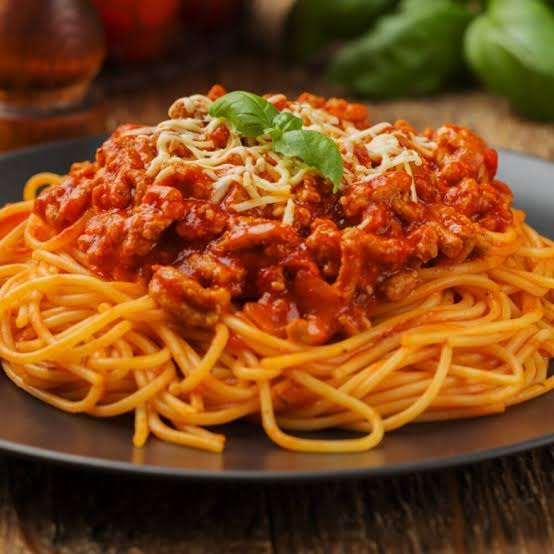

Inicio
Espaguetis a la Boloñesa

Descripción
Un clásico de la cocina italiana que nunca falla. Esta salsa rica y reconfortante es ideal para compartir en una cena familiar o para recargar energías después de un largo día.
El gran secreto de esta receta es dejar que la salsa se cocine a fuego lento para que los sabores de la carne y el tomate se concentren al máximo.
Ingredientes
- 400g de espaguetis
- 500g de carne molida de res
- 1 cebolla finamente picada
- 2 dientes de ajo picados
- 400g de puré de tomate
- Queso parmesano rallado al gusto
Pasos
- Sofreír la cebolla y el ajo en una sartén con un chorrito de aceite de oliva hasta que estén dorados.
- Agregar la carne molida y cocinar a fuego medio hasta que pierda su color rosado.
- Verter el puré de tomate, sazonar con sal y pimienta, y dejar cocinar a fuego lento por 20 minutos.
- Mientras tanto, cocinar los espaguetis en una olla con abundante agua salada hirviendo hasta que estén al dente.
- Escurrir la pasta, servir en los platos, cubrir con abundante salsa boloñesa y espolvorear el queso parmesano por encima.